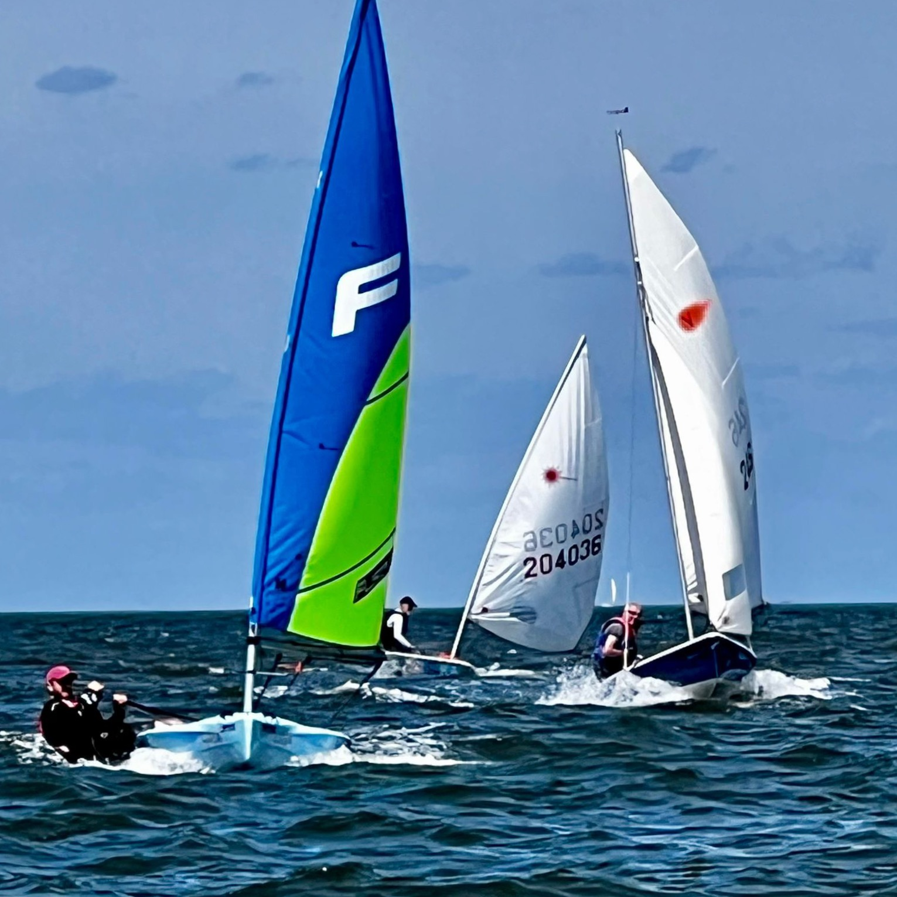
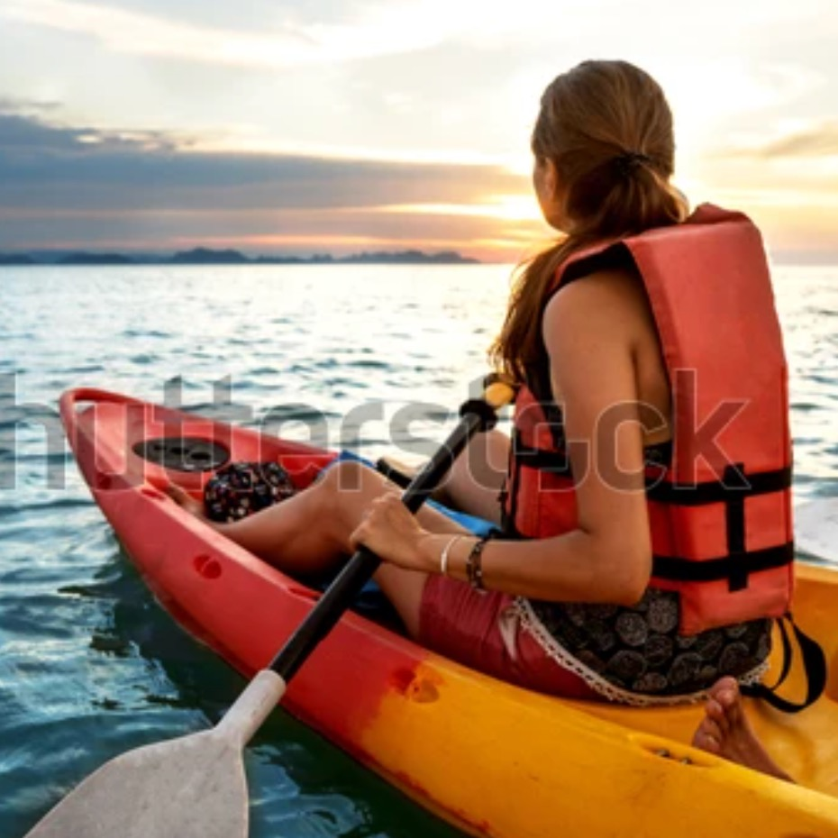
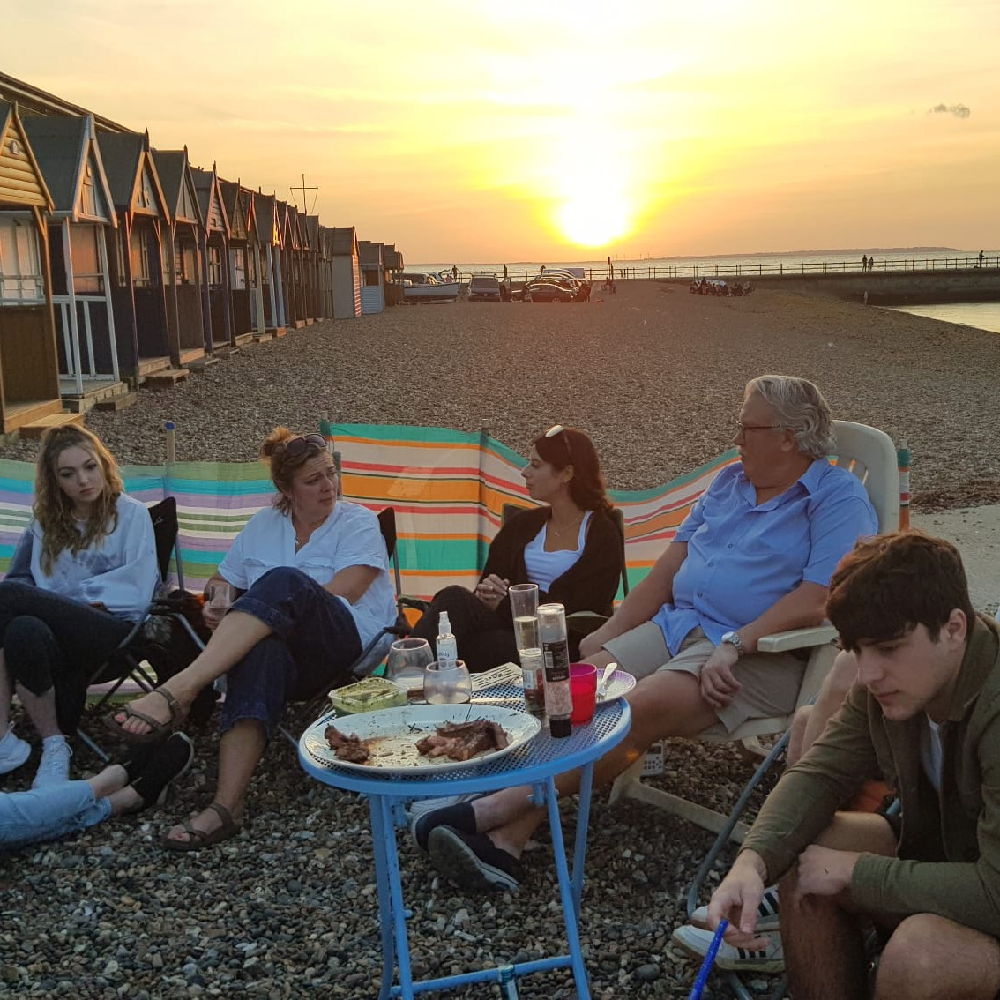

Situated in Herne Bay, we are an RYA affiliated club. A safe and friendly place for dinghy sailors, kayakers and open water swimmers.
>Founded in 1964, the club has rich sailing history and an active social life. All members have daily access to the changing rooms and boat stores. We sail most weekends from March until late October, with evening sailing during the summer months. Members may bring well-behaved dogs into the clubhouse.

Our sailing calendar offers a mix of racing, training, cruising and general sailing. Although our main activity is dinghy racing, the club also serves as a useful base for those who simply prefer sailing their boats in a safe, controlled environment. For new and inexperienced sailors there is a free training programme based on the RYA Level 2 course. For those without their own dinghy, there are club boats to hire for a small fee.

We actively encourage those who don't sail but want to enjoy the water in other ways, including kayakers, canoeists, paddle boarders and open water swimmers. The beach is generally quieter than the main beach and the water is partially sheltered by the old Hampton Pier.

Join as a social member and enjoy the views from our bar. There is an active social calendar with quizzes, talks, trips, club dinners and barbeques through the year. Social members also receive a key and passcode for the toilets and changing rooms.